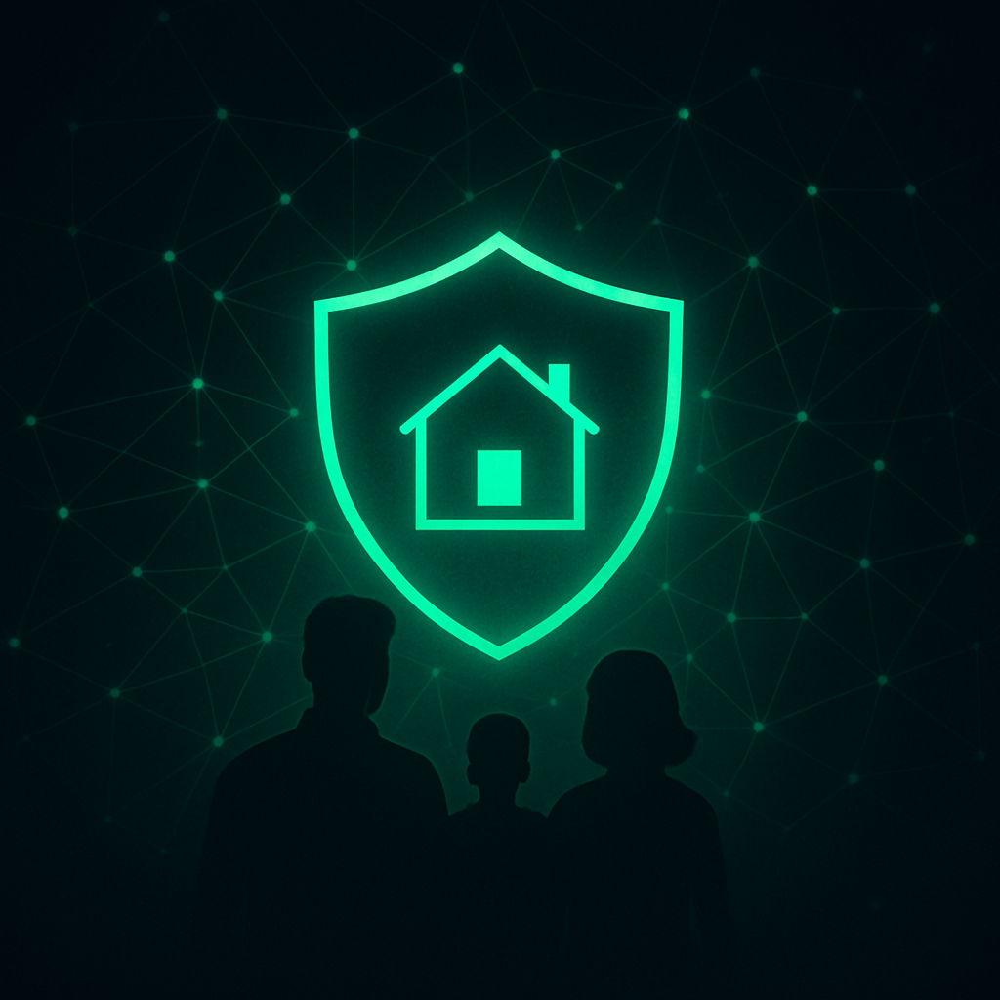

Partner with Cyber Seeds
— UK Domestic Cyber Ecology Standard
Join the first movement for household cyber resilience, digital wellbeing, and family-centred safety.
Now open for 3–5 founding pilot partners.
What is Cyber Seeds?
A trauma-aware, family-first digital safety framework for councils, schools, MATs, charities, and public sector leaders.
- Six-volume Canon – The Great Book of Domestic Cyber Ecology
- Certified Standard (DCS-UK v1.0, Soft Power Edition)
- Practitioner training, audit tools, and accreditation
- Ready for Online Safety Act, GDPR, Data Protection, and safeguarding
Why Partner?
- National recognition as an early adopter
- Exclusive pilot offer and reduced license fee
- Co-branded press, local pilots, and case studies
- Full toolkit for rapid implementation and measurable impact
How to Get Started
First-movers receive ongoing support, new editions, and priority access.
Request Your Partner Pack & Demo